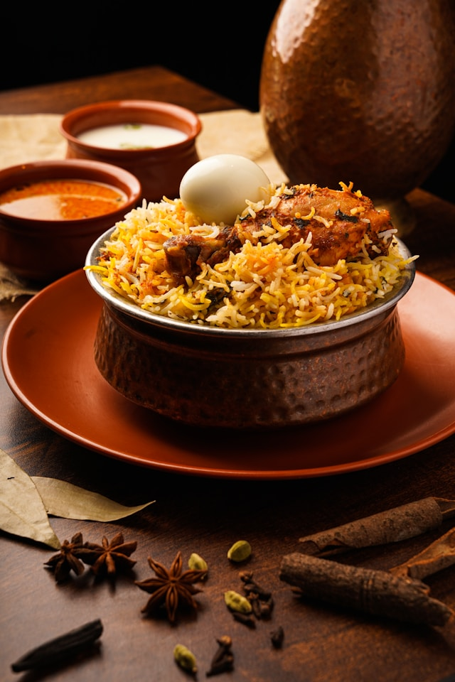

Biryani
Ingredients
- Rice
- Chicken
- Biryani Masala
Recipe
- Cook the Rice: Rinse and soak basmati rice for 30 minutes. Cook the rice with whole spices (bay leaf, cardamom, cinnamon) until it's 70-80% done. Drain and set aside.
- Prepare the Meat and Masala: In a large pot, sauté onions until golden brown. Add marinated meat (chicken or lamb) with yogurt, ginger-garlic paste, and spices (turmeric, cumin, garam masala). Cook until the meat is tender and the masala thickens.
- Layer and Dum Cook: Layer the partially cooked rice over the meat masala. Sprinkle with fried onions, saffron milk, and fresh herbs (mint, cilantro). Cover the pot, seal it with dough, and cook on low heat ("dum") for 20-30 minutes until the flavors meld together.

Korma
Ingredients
- Chicken
- Cooking Oil
- Korma Masala
Recipe
- Prepare the Ingredients: Sauté sliced onions in oil until golden brown. Add ginger-garlic paste and sauté briefly. Blend the mixture into a smooth paste.
- Cook the Chicken: In the same pot, add the onion paste, yogurt, ground spices (coriander, cumin, garam masala), and salt. Add chicken pieces and cook until the chicken is tender and well-coated with the masala.
- Simmer and Serve: Add a bit of water or cream to adjust the consistency. Simmer on low heat until the oil separates and the korma is rich and creamy. Garnish with fresh cilantro and serve.